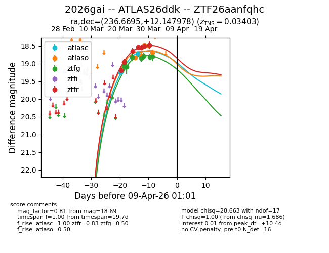
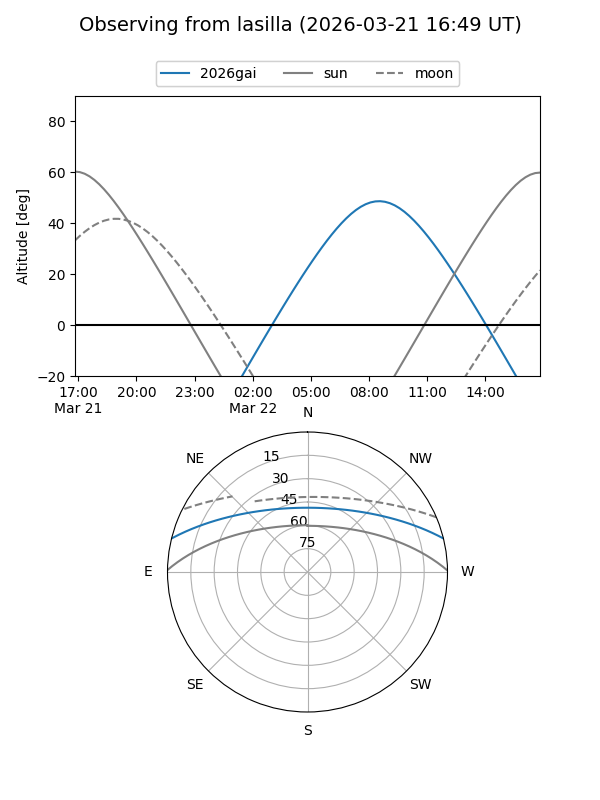
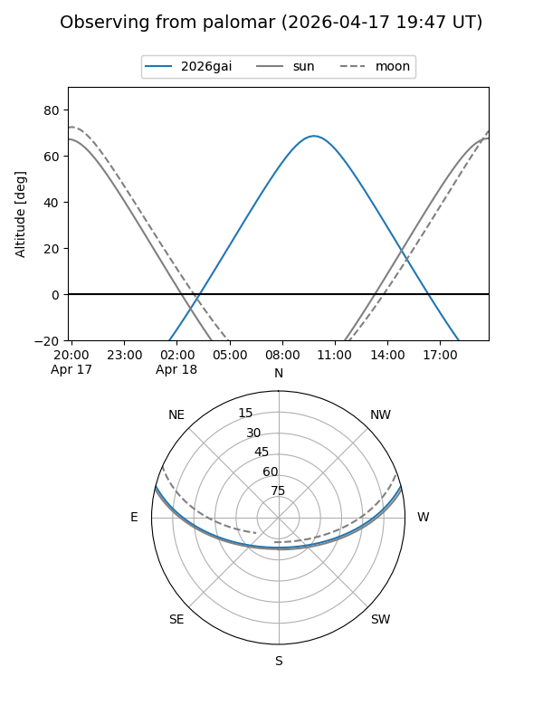
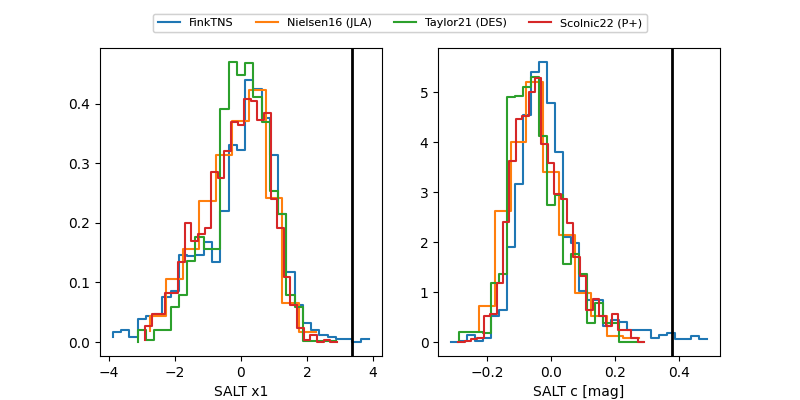

2026gai
Target 2026gai at 2026-04-09 01:06
Aliases and brokers:
FINK: link
Lasair: link
ALeRCE: link
TNS: link
YSE: link
alt names
ZTF26aanfqhc (ztf,fink_ztf)
2026gai (tns,yse)
ATLAS26ddk (atlas)
Coordinates:
equatorial (ra, dec) = 236.6695,+12.14798
equatorial (HMS+DMS) = 15:46:40.67,+12:08:52.72
galactic (l, b) = (21.6996,+46.37117)
Flags:
Photometry:
last atlasc=18.71, atlaso=18.69, ztfg=18.81, ztfr=18.48
2 atlasc, 5 atlaso, 7 ztfg, 7 ztfr detections
Lightcurve

Visibility


Additional plots
